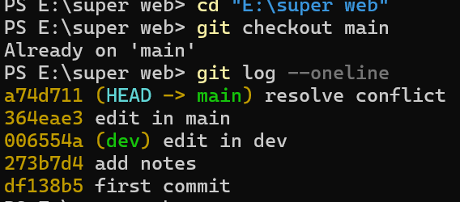
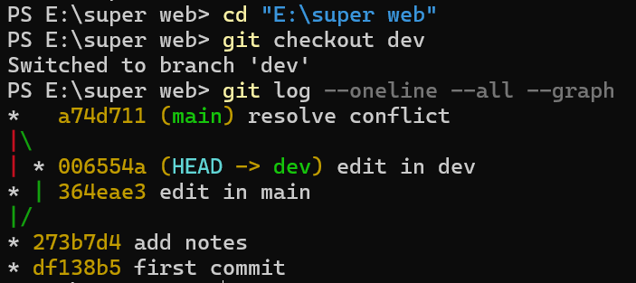
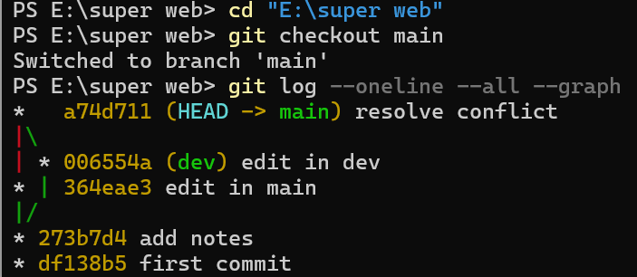
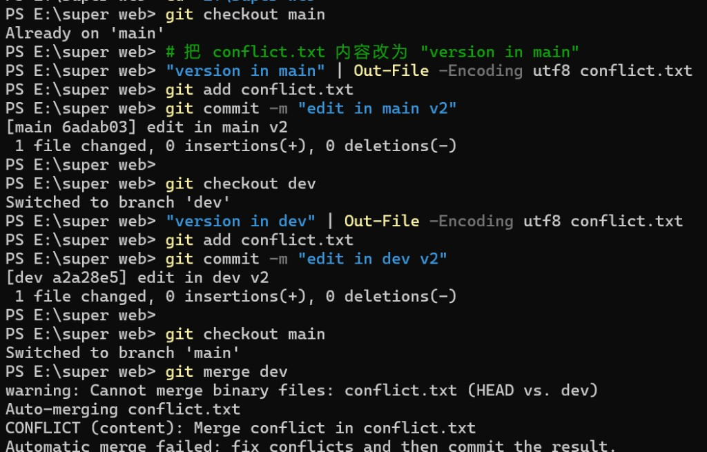
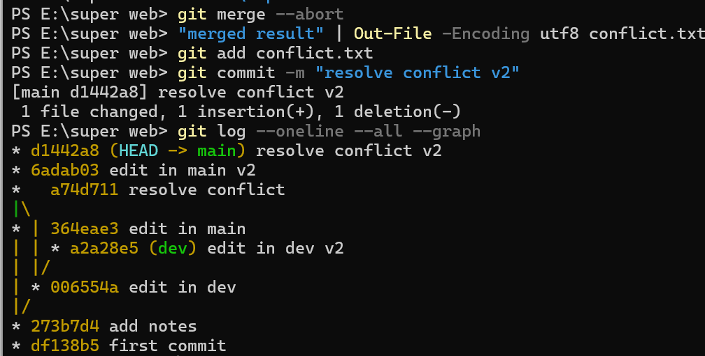

注册 GitHub 账号，安装 Git 客户端，并配置全局用户名和邮箱。
git config --global user.name "Fangdeyip" git config --global user.email "2170755776@qq.com" git config --list
已配置完成，Git 客户端正常运行。
在远程 Git 服务器创建空仓库，本地初始化并推送首次提交。
git remote add origin <REMOTE_URL> echo "# test" > README.md git add README.md git commit -m "first commit" git log --oneline

基于 main 分支创建 dev 分支，在 dev 分支上新增 notes.txt 并提交。
git checkout -b dev echo "dev notes" > notes.txt git add notes.txt git commit -m "add notes" git log --oneline --all --graph

切换到 main 分支，将 dev 合并进来。
git checkout main git merge dev git log --oneline --all --graph
Fast-forward 快进合并，main 与 dev 指向同一提交。

git checkout main echo "version in main" > conflict.txt git add conflict.txt git commit -m "edit in main" git checkout dev echo "version in dev" > conflict.txt git add conflict.txt git commit -m "edit in dev" git checkout main git merge dev
输出：CONFLICT (add/add): Merge conflict in conflict.txt

echo "merged result" > conflict.txt git add conflict.txt git commit -m "resolve conflict" git log --oneline --all --graph

本次实验掌握了 Git 全局配置与远程仓库关联，理解 dev/main 双分支协作流程，实践 Fast-forward 快进合并与冲突的制造及解决，最后成功推送至远程服务器。